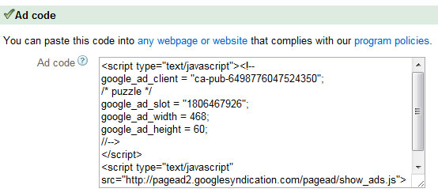

Created: 5/16/2012
By: Kennedy Rose
Email: kennedy@kennedyrose.com
Note: Thank you for purchasing my script. If you have any questions that are not answered with this help file, please feel free to email me at kennedy@kennedyrose.com.
To setup "Word Search Creator With Ad Support" on your server, just upload the contents of this entire package to your server.
Your default puzzle should appear in the director that you uploaded the script to. Example: If you uploaded the script to the /wordsearch/ directory, it should appear here:
http://www.yoursite.com/wordsearch/
That's it! The rest of this readme will cover inserting ads and editing the default words. So there is no need to read any further if this is all you wish to do.
To insert an ad at the bottom of the page, first open up "ad.txt" with any text editor. This is an empty file that came with this package.
Copy and paste any ad code here that you wish to display at the bottom of the puzzle. Example: Google Adsense code will look something like this:

So you would just select that entire block of code and paste it into "ad.txt" with a text editor.
The next step is to upload "ad.txt" that you have just edited onto the server. After that, your advertisement will show up at the bottom of "index.html".
Any other type of Javascript or HTML will also work as well.
The default words are the words that are chosen at the first screen if the user doesn't input any new words. These words are located in "default.js" in the /lib/ directory. Just change the words in between the quotes to any other words you want to appear.
If you catch any errors, email me at kennedy@kennedyrose.com
Thank you for purchasing this script! If you have questions, feel free to email me at kennedy@kennedyrose.com. Thanks again!
Kennedy Rose